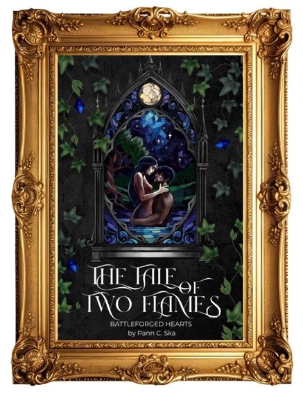

There are stories that have been wiped from history books.
And connections older than time.
This…
is one of them.
The Tale of Two Flames: Battleforged Hearts
The Tale of Two Flames
After years of living only for duty, Slava—the Flame of Rea—knows exactly who she is supposed to be: a leader, a warrior, and the last hope for her people. She never expected to find destiny in the very place that was meant to be the end of her. But it seems that every strike of her sword has led her to this moment.
On the opposite side, Namir—the Ghost of the Ikaran Imperium—has never had a choice. Raised for a single purpose, he has spent his entire life perfecting the art of survival in this cold, cruel world. He has known only war and silence… until their blades meet, and his whole world shifts.
Both forged by the same battle.
Both solitary predators, focused on one thing—winning.
When their paths collide, they recognize something they have never faced before: an equal.
On the battlefield where kingdoms clash, they are sworn enemies—yet neither can resist the pull that burns between them. What begins as instinct quickly turns into something far more dangerous, something neither of them was meant to feel.
Because for the first time, Namir wants something beyond escaping his fate. And the freedom he always dreamed of tastes like her.
And Slava cannot afford to want him back… but is willing to lose everything to have him anyway.
Now the lines between loyalty and desire are beginning to blur.
And in a world that demands obedience and sacrifice…
they become the only thing that can destroy each other.

ARC Reader Application
To the esteemed BookTokers, literature bloggers, reviewers, and connoisseurs of dark romance,
By royal decree of the future Queen of the Kingdom of Rea — Slava herself — you are hereby summoned to present yourselves for consideration as recipients of a The Tale of Two Flames ARC.
I see no reason to persuade you. You already know this story is worth your attention — it is, after all, about me. And that insufferable, yet irresistible, fool called Namir (I love him.)
If you possess both impeccable taste and the courage to survive what awaits you, proceed with the application below.
Should fortune—and, more importantly, my judgment—favor you, a complimentary ebook and other Crown-worthy treasures shall find their way to your Kingdom's gates... or rather, your inbox.
Ignore this royal summons at your own risk.
Apply NowAbout the author
Hi, Pann C. Ska here 👋
I'm a writer, creator, and rebel 😏 The kind of person who, once she decides something, nothing will stop her — even if it requires burning her old life down and starting all over to pursue the dream she's had since she was 12 years old.
I'm also a single mum, which is the most important role in my life (also the most time-consuming) — and the reason I do all of this. For him 💚 Motherhood has taught me patience, compromise, discipline, and how to truly be present. It's the greatest challenge I've ever taken on, and one I'll be forever grateful for.
Before, I spent a decade working as a software developer — a real Renaissance (wo)man, nql 😂 Graphic design, marketing, front-end, back-end... you name it. Turns out creating fantasy worlds is far more fun than debugging applications — although both require a concerning amount of caffeine and an equally concerning level of ADHD hyperfixation. The difference? Writing books doesn't drain my soul the way coding did. Safe to say, I'm glad I escaped the dark side ✨
When I'm not playing Hot Wheels with my son, inventing new ways to emotionally destroy my characters (and readers), or making questionable TikTok trends, you'll usually find me writing and reading — duh 🤷🏻♀️ But not just fiction: I journal, write poetry, and even songs 🙄 Apparently I just can't stop making art, whatever form it takes. I'm into spirituality, I also love travelling, throwing parties in my living room and dancing (my son either joins in or silently judges me 😂), and blasting music during my solo rides loud enough to quiet my brain (which rarely happens). I also develop other random hobbies and business ideas on daily basis, but I'm not talking about that.
I hope you enjoy my books just as much as I enjoyed writing them. And if they leave you awake at 3am, mumbling to yourself: "just one more chapter," emotionally damaged, and with unhealthy attachment to my fictional characters... then I've officially achieved my life mission 🥰
Take care. Love y'all 💋